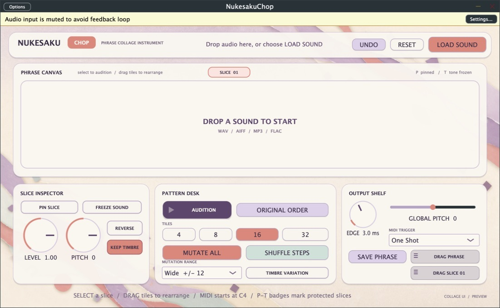
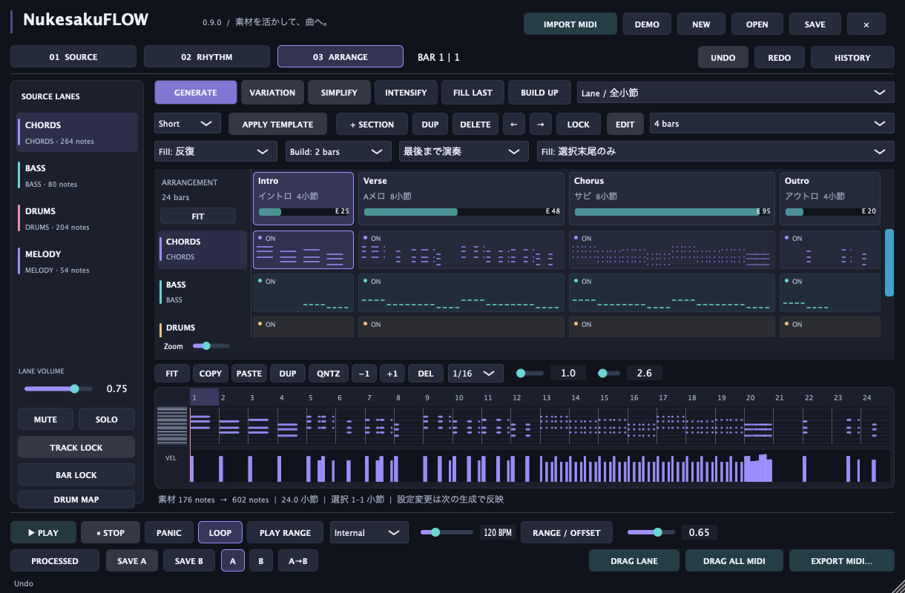
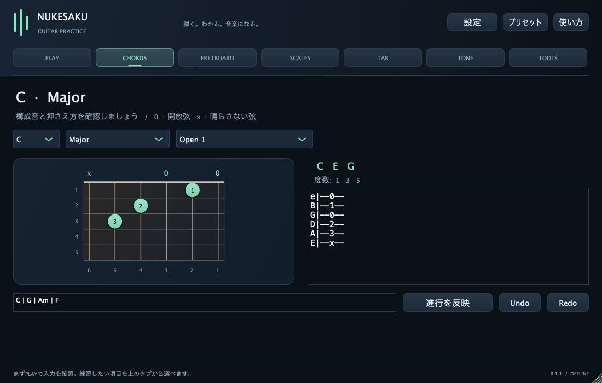

HARMONYCHORD PROGRESSION STUDIO
ひらめきを、
コードに。
気になる響きをタップして並べ、聴きながら進行を育てる。一定のリズムから複雑な刻みまで、曲の雰囲気に合わせて選べます。
ブラウザですぐに使えます。インストール・ログイン不要。
FIND YOUR SOUND↗
YOUR KEYCmajor
CHOOSE YOUR GROOVE
基本05
単純系11
複雑系32
12 KEYS / 4 SCALESMIDI EXPORT ↗
Create · Learn · Share
作曲初心者の「わからない」を出発点に、音楽プラグインを作り、DTMを学び、その過程まで公開するプロジェクトです。
HARMONY · PC / スマホ · インストール不要
FOUR CHORDS. YOUR NEXT IDEA.
クリックして、音の雰囲気を試す。
コードと刻みの試聴デモ FULL STUDIO ↗
Browser Chord Studio
PC / スマホ気になる響きをタップして並べ、聴きながら進行を育てる。一定のリズムから複雑な刻みまで、曲の雰囲気に合わせて選べます。
ブラウザですぐに使えます。インストール・ログイン不要。
MELODY → CHORDS → BASS
メロディから、コードとベースへ。4つの伴奏候補を聴き比べて、自分の曲へ育てる新しいHARMONYを作っています。
Handmade Music Tools
難しいことを隠すのではなく、触りながら自然に理解できる道具を目指しています。


Now in Nukesaku Lab
無料Betaで見えた課題を一つずつ解き、NukesakuCOMPOSEを“生成して終わり”ではない作曲環境へ進化させています。
 ACTUAL DEVELOPMENT BUILD
ACTUAL DEVELOPMENT BUILDBeta版ではできなかったコード変更とPiano Roll編集に対応。1.5.0では編集領域を中央へ広げ、設定・生成・編集・DAW転送の流れが自然につながるComposer Canvasへ進化しました。
1.5.0の進化を見る正式版は未販売。Windowsはネイティブ検証前です。

DEVELOPMENT BUILD / 0.9.0短いフレーズから、イントロ〜サビの構成へ。コードの刻みパターンとアレンジメント生成、DRUM MAP表示に対応した開発版です。
未販売 · Bitwigでの保存復元を検証中
VALIDATION PREVIEW / 0.1.3チューナー、コード辞書、指板、MIDI→TABをまとめたギター練習支援の検証版。実ギターでの判定精度を育てている段階です。
未配布 · 実ギターでの判定精度を改善中NukesakuEQ — 音の変化を見て、聴いて、理解しやすいEQを研究中。公開時期未定。
Learn & Follow
15 ARTICLES / 3 COURSES
音楽制作の「作業机」を知るところから。
→02 / 曲作りの基本いくつかの音が、ひとつの響きになる。
→03 / 音作りの基本音の明るさや厚みを、整えてみよう。
→About Nukesaku Audio
わからないからこそ、わかりにくい場所に気づける。Nukesaku Audioは、作曲を学ぶ人と同じ目線で、音楽を始めるハードルを少し下げる道具と説明を作る個人プロジェクトです。
Contact / Feedback
不具合、使いにくかったところ、こんな機能が欲しいという声を歓迎しています。